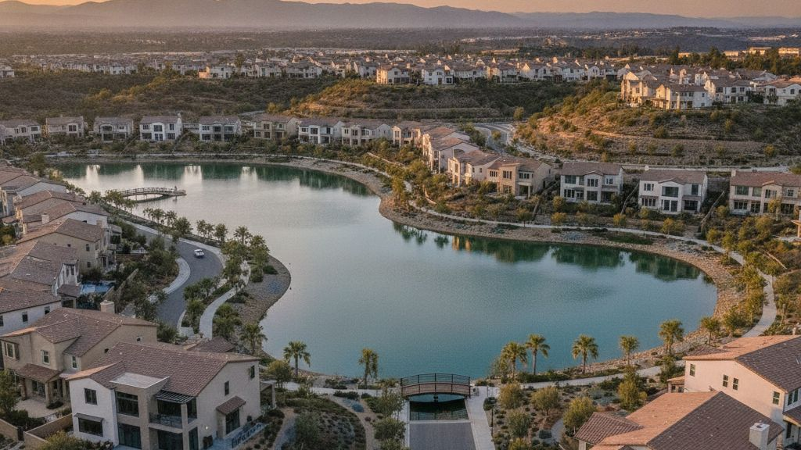
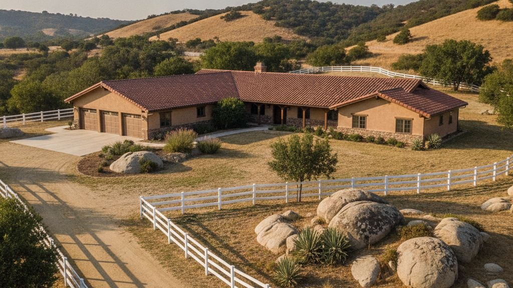

 Vista92081, 92083, 92084Vista is an inland North County city with an older downtown, a long agricultural past, and many master-planned subdivisions built over the following decades.San Marcos92069, 92078San Marcos is a fast-growing North County city that combines a Cal State campus district, a long-established lakeside community, and a ridge of newer master-planned neighborhoods.San Elijo Hills92078Built on the ridges south of central San Marcos, San Elijo Hills was laid out around a walkable Town Center with trails threading between its villages.Lake San Marcos92078Built around a man-made lake and golf course west of Twin Oaks Valley, this resort-style community has its own rules and membership structure.Escondido92025, 92026, 92027, 92029Escondido is the largest inland city in North County, with a historic downtown, a broad valley floor, and hillside and rural neighborhoods spreading to the north and east.Harmony Grove & Elfin Forest92029Harmony Grove and Elfin Forest are low-density rural communities southwest of Escondido, set among oak-lined canyons and equestrian properties.Hidden Meadows92026Hidden Meadows is a hillside community of large lots northeast of Escondido, built around a golf course and reached by winding roads.Poway92064Poway is a city in the foothills of north-central San Diego County that markets itself as a rural-leaning community with strong schools and large lots.Rancho Santa Fe92067, 92091Rancho Santa Fe is an unincorporated, high-value community of estates and equestrian properties governed by the Covenant, a set of design and land-use restrictions dating to the early twentieth century.Fairbanks Ranch92067Fairbanks Ranch is a gated equestrian-oriented community in the 92067 area, centered on a country club and residential estates.
Vista92081, 92083, 92084Vista is an inland North County city with an older downtown, a long agricultural past, and many master-planned subdivisions built over the following decades.San Marcos92069, 92078San Marcos is a fast-growing North County city that combines a Cal State campus district, a long-established lakeside community, and a ridge of newer master-planned neighborhoods.San Elijo Hills92078Built on the ridges south of central San Marcos, San Elijo Hills was laid out around a walkable Town Center with trails threading between its villages.Lake San Marcos92078Built around a man-made lake and golf course west of Twin Oaks Valley, this resort-style community has its own rules and membership structure.Escondido92025, 92026, 92027, 92029Escondido is the largest inland city in North County, with a historic downtown, a broad valley floor, and hillside and rural neighborhoods spreading to the north and east.Harmony Grove & Elfin Forest92029Harmony Grove and Elfin Forest are low-density rural communities southwest of Escondido, set among oak-lined canyons and equestrian properties.Hidden Meadows92026Hidden Meadows is a hillside community of large lots northeast of Escondido, built around a golf course and reached by winding roads.Poway92064Poway is a city in the foothills of north-central San Diego County that markets itself as a rural-leaning community with strong schools and large lots.Rancho Santa Fe92067, 92091Rancho Santa Fe is an unincorporated, high-value community of estates and equestrian properties governed by the Covenant, a set of design and land-use restrictions dating to the early twentieth century.Fairbanks Ranch92067Fairbanks Ranch is a gated equestrian-oriented community in the 92067 area, centered on a country club and residential estates.Have a property that needs a value?
Send the address and the reason for the appraisal. You will get a firm quote and a schedule before anything is booked.